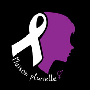

Les rencontres
Pouvoir trouver une problématique et essayer de la résoudre, passe d'abord par rencontrer des gens.
Oui mais qui ?
Etant une personne très impliquée dans la cause féministe, j'ai toujours été révoltée par les violences conjugales. C'est pour cette raison que je me suis intéressé à cette thématique pour ce travail.
J'ai ainsi eu l'occasion de rencontrer la responsable des projets de La Maison Plurielle ainsi que 4 personnes ayant vécu la violence conjugale.
Prise de contact
La Maison Plurielle
Après beaucoup de recherches, j'ai découvert la Maison Plurielle ASBL. C'est une ASBL qui lutte contre les violences de genre. C'est-à-dire les violences conjugales mais aussi les violences intrafamiliales ainsi que liées à l'honneur (les mariages forcés et les mutilations génitales). Suite à l'échange de mails et une prise de rendez-vous avec la gestionnaire des projets de l'association, j'ai pu réaliser ma première interview.
Interview
Cette première interview avait pour but de découvrir l'association mais également le sujet plus en profondeur. J'ai pris connaissance des différents outils comme des Bds, des podcasts, des comptes Instagram qui parlent du sujet.
-
Pouvez-vous présenter votre association ?
La Maison Plurielle est une association agréée en matière de violence de genre, qui s'occupe de violences conjugales, intrafamiliales, et liées à l'honneur (mariage forcé et mutilation génitale féminine). L'association a plusieurs missions, notamment l'accompagnement individuel et collectif des personnes victimes, la prévention et la sensibilisation à travers des animations et la création d'outils pédagogiques,
la coordination de la plateforme Ruban Blanc à Charleroi, la participation à des actions de partenaire, et la formation de professionnels et futurs professionnels sur les thématiques de violence de genre. L'équipe est composée de cinq collaboratrices, incluant une coordinatrice, une assistante sociale, une psychologue, une assistante administrative, et une chargée de projet.
-
Combien de membres comptez vous plus ou moins à l'heure actuelle ?
Donc dans les personnes qui travaillent à la maison plurielle, ça je l'ai dit, on est 5 et dans les personnes que nous suivons qu'on appelle des bénéficiaires parce qu'elles bénéficient d'une aide de notre part, pour l'instant on suit 68 personnes.
C'est déjà beaucoup.
Oui c'est déjà beaucoup sachant qu'on est qu'au mois de février et on a plus ou moins 19 nouvelles demandes qu'on doit commencer à suivre.
-
Pourriez vous me raconter une expérience marquante à propos de l'association ?
Mais là j'en ai 2, la première je dirais que c'est la reconnaissance de l'ASBL en tant que service spécialisé et agréé au niveau de la région wallonne. Ça c'est hyper important pour une petite association d'avoir un agrément de cette ampleur-là parce que ça permet d'asseoir le fait que la maison plurielle à toute sa place en tant que service spécialisé à Charleroi parce qu'en fait il faut savoir qu'on est un des seuls services de la ville de Charleroi à être vraiment spécialisé dans ces matières de violence faite aux femmes. Il y a d'autres services qui aident les personnes victimes de violences mais qui n'ont pas cette spécificité-là, d'être spécialisé vraiment précisément à ce point-là.
Après, il y a plutôt des situations marquantes que des expériences dont les mises en sécurité des victimes où là ma collègue me disait, c'est travailler dans l'urgence, c'est la rapidité mais il faut être aussi efficace et c'est toujours un peu marquant pour l'équipe. Parce que là du coup le temps s'arrête et c'est du non stop. Il faut qu'à la fin de la journée, on ait trouvé une solution pour la personne qui nous demande de l'aide.
-
Quels sont vos plus grands problèmes au sein même de l'association ?
Ce sont toutes les structures sociales quand tu te poseras la question tu te rendras compte que c'est les finances. C'est l'aspect financier parce qu'on dépend du subside on doit répondre à des appels à projet pour avoir de l'argent et c'est toujours compliqué. Dans le social c'est le gros problème de l'aspect financier.
Et je dirais que le deuxième problème c'est, en matière d'accompagnement, c'est l'assiduité des bénéficiaires parce que ça c'est une chose qu'on ne peut pas contrôler. Après on tient compte que ce sont des personnes qui connaissent de grandes difficultés dans leur vie et parfois, manquer des rendez-vous fait partie du jeu. Il y a des dames qui viennent puis qui arrêtent de venir ou qui ne préviennent pas ou ce genre de chose parce qu'elles ont la tête tellement remplie par d'autres problèmes que continuer le suivi ce n'est pas facile.
Les utilisateurs
Le thème des violences conjugales est assez sensible et ce n'est pas simple d'en parler. Pour trouver mes utilisateurs, j'ai d'abord demandé à l'association si je pouvais rencontrer quelqu'unes de leurs bénéficiaires. Malheureusement, ce n'était pas possible car la Maison Plurielle garantit un maximum d'anonymat aux victimes. C'est pour cette raison que j'ai fait un appel sur Facebook.

4 personnes ont répondu à mon appel : 3 femmes et 1 homme.
Interviews
Ces interviews m'ont permis de découvrir l'histoire de mes utilisateurs mais également de comprendre qu'elles ont été les réels problèmes lors de leur «prise en charge».
-
Pouvez-vous m'expliquer rapidement votre parcours de vie ?
Témoin n°1 : mon parcours de vie n'a pas été très compliqué. J'ai fait des études de coiffure à la Garenne que je n'ai pas continuée car ce n'est pas une branche qui me correspondait. Ensuite, j'ai fait une formation de technicienne de surface, donc j'ai travaillé à domicile. Puis de là, j'ai fait une formation d'aide-soignante qui s'est mal passée à cause des professeurs et que je n'ai pas terminée non plus. Donc voilà, mon parcours n'est pas très glorieux.
-
Que représente pour vous la thématique des violences de genre (violences conjugales, intra-familiales, liées à l'honneur (mariage forcée, mutilation génitale)) ?
Témoin n°3 : C'est une atteinte à la vie des femmes. Pour le reste, un fléau difficilement contrôlable et qui n'est pas bien compris et pas bien ressenti par la population, par la société en tout cas.
-
Avez-vous porté plainte, avez-vous été facilement entendue par la justice ?
Témoin n°2 : Oui, j'ai déposé plainte, j'ai déposé environ 40 plaintes et aucune n'a été prise au sérieux. Sous prétexte que j'étais un homme, je devais savoir me défendre.
-
Avez-vous été vous-même confronté à ce genre de maltraitance ou connaissez vous des personnes concernées par ces actes ?
Témoin n°2 : Oui, j'ai été victime de violences conjugales avec mon premier petit copain entre 2011 et 2017.
-
Quels ont été les impacts sociaux, médicaux, familiaux et financiers (pertes de travail, des enfants, alcoolismes etc.) ?
Témoin n°1 : Sociaux oui, car j'ai vraiment fait un tri autour de moi. Je n'ai pas beaucoup de monde autour de moi mais celle qui le sont, est des personnes de confiance pour moi. Ne fut-ce qu'aussi que pour le travail, je ne supporte pas de travailler avec un homme. Financier non.
-
A l'heure actuelle, quelle est votre plus grosse bête noir ?
Témoin n°4 : Moi-même. Moi même parce que je recherche tout le temps ma part de responsabilité. Je me dis que c'est moi qui ai choisi ce mari. C'est moi qui ai choisi de faire des enfants avec lui et que j'aurais dû ouvrir mes yeux. J'aurais dû m'en rendre compte. Ma plus grande bête noire, c'est moi et ma culpabilité me pèse chaque jour. Je me dis que mes enfants ont souffert de mes choix. C'est très difficile pour moi de sortir de ce système et de me dire mais je suis victime avant d'être hôte. Je ne suis pas auteur de malfaisance, je suis victime. C'est difficile. Et alors, j'en veux à mes parents parce que je me dis que peut-être que si j'avais eu une éducation comme celle que je méritais avec de l'amour, de la tendresse, de la tension, j'aurais peut-être mieux et j'aurais peut-être eu un, je me serais permis, un panel, un choix dans les hommes qui s'offraient à moi pour choisir avec qui je voulais passer ma vie, avec qui je voulais faire des enfants. Là non, j'ai pris la première personne qui m'a accordé du temps et de l'attention. Donc je pense que ma bête noire, c'est moi.